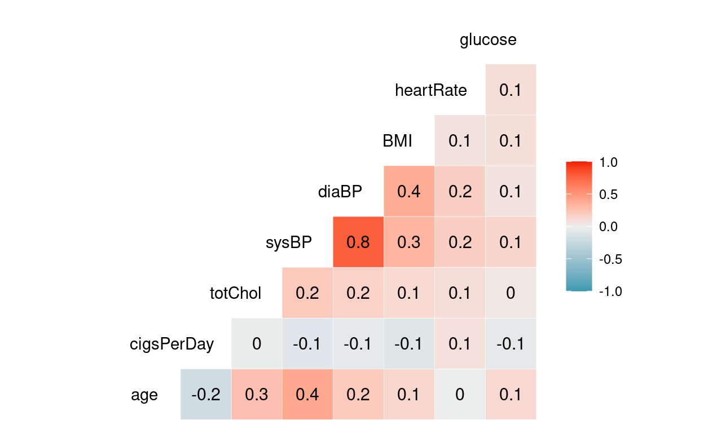
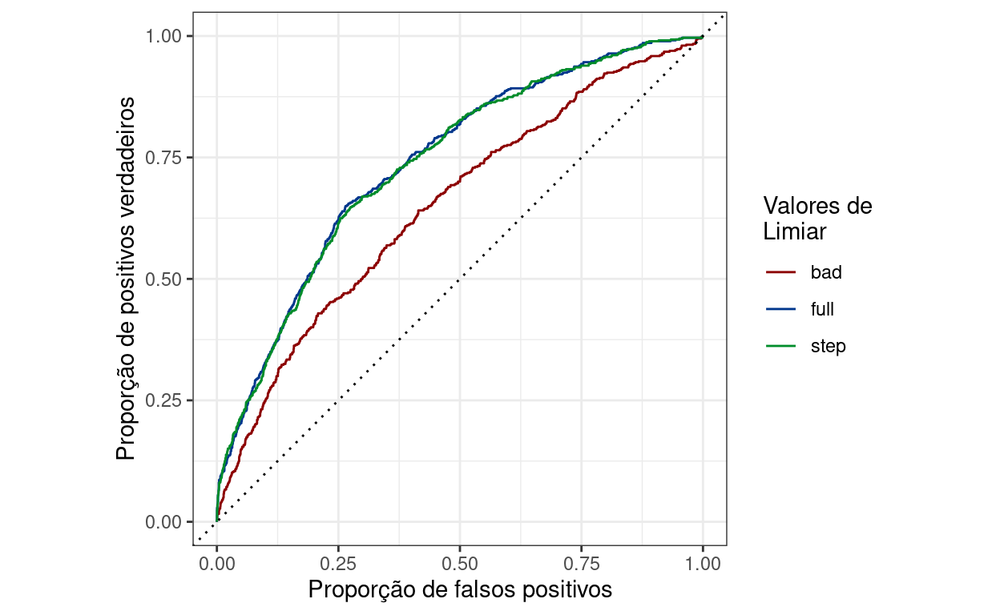

Variáveis relacionadas ao risco de se desenvolver doenças cardíacas.
Regressão logística usando o dataset Logistic regression to predict heart disease, extraído do Kaggle.
Este dataset consiste em uma tabela com uma série de variáveis de pacientes com e sem doenças cardíacas. O objetivo aqui é conferir a probabilidade de um paciente vir a desenvolver doenças cardíacas em sua próxima década de vida, com base nessas informações.
Nessa análise vou usar uma regressão logística para entender as variáveis que melhor descrevem a variável de resposta (risco de doenças cardíacas nos próximos dez anos), não incluindo nesse post analises preditivas.
Para selecionar as variáveis do modelo, vou usar uma seleção em passo-a-passo (stepwise regression). Em seguida, vou comparar a performance de meus diferentes modelos usando curvas ROC e a AUC e analisar os coeficientes do modelo escolhido. Também discuto brevemente a acurácia do modelo, a importância de seus falsos negativos e o desbalanço de classes presente no conjunto de dados.
Exponho parte do código na análise, mas para ter acesso a todo código utilizado, disponibilizo ela em minhas GitHub pages. Essa análise também pode ser acessada em meu Kaggle, em inglês e numa versão mais enxuta. O código (totalmente reprodutível), também pode ser extraído do repositório dessa análise!
O primeiro passo é sempre dar uma olhada na estrutura da tabela:
Rows: 4,238
Columns: 16
$ male <int> 1, 0, 1, 0, 0, 0, 0, 0, 1, 1, 0, 0, 1, 0, 0…
$ age <int> 39, 46, 48, 61, 46, 43, 63, 45, 52, 43, 50,…
$ education <int> 4, 2, 1, 3, 3, 2, 1, 2, 1, 1, 1, 2, 1, 3, 2…
$ currentSmoker <int> 0, 0, 1, 1, 1, 0, 0, 1, 0, 1, 0, 0, 1, 0, 1…
$ cigsPerDay <int> 0, 0, 20, 30, 23, 0, 0, 20, 0, 30, 0, 0, 15…
$ BPMeds <int> 0, 0, 0, 0, 0, 0, 0, 0, 0, 0, 0, 0, 0, 1, 0…
$ prevalentStroke <int> 0, 0, 0, 0, 0, 0, 0, 0, 0, 0, 0, 0, 0, 0, 0…
$ prevalentHyp <int> 0, 0, 0, 1, 0, 1, 0, 0, 1, 1, 0, 0, 1, 1, 0…
$ diabetes <int> 0, 0, 0, 0, 0, 0, 0, 0, 0, 0, 0, 0, 0, 0, 0…
$ totChol <int> 195, 250, 245, 225, 285, 228, 205, 313, 260…
$ sysBP <dbl> 106.0, 121.0, 127.5, 150.0, 130.0, 180.0, 1…
$ diaBP <dbl> 70.0, 81.0, 80.0, 95.0, 84.0, 110.0, 71.0, …
$ BMI <dbl> 26.97, 28.73, 25.34, 28.58, 23.10, 30.30, 3…
$ heartRate <int> 80, 95, 75, 65, 85, 77, 60, 79, 76, 93, 75,…
$ glucose <int> 77, 76, 70, 103, 85, 99, 85, 78, 79, 88, 76…
$ TenYearCHD <int> 0, 0, 0, 1, 0, 0, 1, 0, 0, 0, 0, 0, 0, 0, 0…Existem algumas variáveis formatadas como numéricas, que são categóricas. Estas serão convertidas para fator. São elas:
male: sexo do pacienteeducation: escolaridade do pacientecurrentSmoker: se fumante no momento do estudo ou nãoprevalentStroke: se o paciente já teve infartoprevalentHyp: se o paciente é hipertensodiabetes: diabético ou nãoTenYearCHD: se o paciente está em risco de desenvolver doenças cardíacas nos próximos dez anos. Essa vai ser a variável de resposta utilizada na regressão logística.Em seguida vou fazer uma análise exploratória simples e rápida. Vou primeiro plotar o correlograma das variáveis contínuas:

As correlações são fracas entre as variáveis, no geral. Isso aponta, a priori, para a não colinearidade entre elas, com exceção da relação entre sysBP e diaBP, que parecem se correlacionar. Como nesse caso vou fazer uma seleção por passo-a-passo, essas duas variáveis provavelmente não vão ficar juntas no modelo, mas vale ficar atento.
Vou agora checar a propoção de casos positivos e negativos em minha variável de resposta, essa informação está armazenada na coluna TenYearCHD:
0 1
3594 644 Existe uma proporção mais alta de pacientes que não desenvolveram doenças (0). Essa é uma informação que vai ser interessante de saber na hora de checar a robustez e acurácia dos modelos, embora não seja condição em uma regressão logística que essas proporções sejam parecidas, para checar a influência dos preditores.
Finalmente, preciso conferir a presença de valores ausentes na amostra:
male age education currentSmoker
0 0 105 0
cigsPerDay BPMeds prevalentStroke prevalentHyp
29 53 0 0
diabetes totChol sysBP diaBP
0 50 0 0
BMI heartRate glucose TenYearCHD
19 1 388 0 Vou retirar todas linhas com valores ausentes, pois eles podem inviabilizar ou comprometer a qualidade dos modelos.
Para selecionar o melhor modelo nessa análise, vou usar um método chamado seleção por passo-a-passo (traduzido livremente do inglês stepwise regression). Nele, a escolha das variáveis preditivas é feita de maneira sistemática e iterativa. Além desse método, existe outros dois da mesma família, que poderiam também ser utilizados. Abaixo, descrevo como funciona cada um deles:
Aqui, como já dito, optei pela seleção por passo-a-passo. Para isso, vou usar o pacote MASS, que contém a função stepAIC. Nessa função, faço uso do argumento direction para definir o tipo de seleção que vou usar. Para usar a seleção escolhida, preciso partir de um modelo completo, que vou chamar de full.model:
(
full.model <- glm(TenYearCHD ~ ., family = "binomial", data=df_heart)
)
Call: glm(formula = TenYearCHD ~ ., family = "binomial", data = df_heart)
Coefficients:
(Intercept) male1 age
-8.258321 0.534871 0.062166
education2 education3 education4
-0.192060 -0.193891 -0.059869
currentSmoker1 cigsPerDay BPMeds
0.072388 0.018020 0.165049
prevalentStroke1 prevalentHyp1 diabetes1
0.704569 0.233855 0.026308
totChol sysBP diaBP
0.002369 0.015451 -0.004095
BMI heartRate glucose
0.005149 -0.003007 0.007212
Degrees of Freedom: 3655 Total (i.e. Null); 3638 Residual
Null Deviance: 3121
Residual Deviance: 2752 AIC: 2788Em seguida, uso a função stepAIC, definindo o argumento direction para both, chamando o modelo resultante de step.model:
Call: glm(formula = TenYearCHD ~ male + age + cigsPerDay + prevalentStroke +
prevalentHyp + totChol + sysBP + glucose, family = "binomial",
data = df_heart)
Coefficients:
(Intercept) male1 age
-8.739521 0.553152 0.065337
cigsPerDay prevalentStroke1 prevalentHyp1
0.019574 0.751412 0.226231
totChol sysBP glucose
0.002248 0.014219 0.007314
Degrees of Freedom: 3655 Total (i.e. Null); 3647 Residual
Null Deviance: 3121
Residual Deviance: 2757 AIC: 2775O valor de AIC do modelo otimizado diminuiu, assim como uma série de variáveis foram retiradas. Especificamente, as variáveis abaixo:
[1] "education2" "education3" "education4"
[4] "currentSmoker1" "BPMeds" "diabetes1"
[7] "diaBP" "BMI" "heartRate" Um ponto interessante de reparar é que diaBP foi eliminada em detrimento de sysBP, que foi mantida. Essas eram as variáveis que apresentavam aparente colinearidade. O número de cigarros que um paciente fuma parece contribuir mais que apenas a informação se ele fuma ou não, dado que a variável currentSmoker foi eliminada do modelo. Vou agora criar um modelo usando apenas as variáveis que foram eliminadas, chamando este de bad.model:
(
bad.model <- glm(TenYearCHD ~ education + currentSmoker + BPMeds + diabetes + diaBP + BMI + heartRate,
family = "binomial", data=df_heart)
)
Call: glm(formula = TenYearCHD ~ education + currentSmoker + BPMeds +
diabetes + diaBP + BMI + heartRate, family = "binomial",
data = df_heart)
Coefficients:
(Intercept) education2 education3 education4
-4.158269 -0.512682 -0.430166 -0.295895
currentSmoker1 BPMeds diabetes1 diaBP
0.269852 0.659125 1.013215 0.029270
BMI heartRate
0.008303 -0.002736
Degrees of Freedom: 3655 Total (i.e. Null); 3646 Residual
Null Deviance: 3121
Residual Deviance: 2982 AIC: 3002Conforme o esperado, o AIC dessse modelo foi mais alto que os demais. Vou utilizar esse modelo de maneira comparativa, para apontar diferenças na robustez dele em relação aos demais (full e step).
Ainda, é sempre bom checar a diferença entre o desvio nulo (referente ao modelo nulo) e o desvio residual, referente ao modelo: em geral, quanto maior essa diferença, melhor. O modelo contendo apenas as variáveis eliminadas tem a menor diferença dentre os três.
Para simplificar, vou chamar os três modelos que vou comparar de step (modelo gerado pela seleção por passo-a-passo), full (modelo com todas variáveis) e bad (modelo com as variáveis que foram excluídas pela seleção).
Uma das maneiras utilizadas para comparar a perfomance de modelos é a curva ROC (de receiver operating characteristic curve). Basicamente, a curva ROC correlaciona a proporção de observações classificadas corretamente/incorretamente (erros do tipo I e II), dependendo do liminar utilizado para classificar um evento como positivo ou não. Foge do escopo desse post discutir o arcabouço teórico da curva ROC (certamente tema para um post separado).
O importante a se entender do gráfico abaixo é que, quanto mais próxima a curva é da diagonal tracejada do plot, pior é a perfomance do modelo, pois essa diagonal indica que a proporção de observações classificadas corretamente é igual à proporção de classificações incorretas (o que indica um modelo sem resolução):

O primeiro fato que fica evidente nas curvas é o de que o modelo bad, ou seja, aquele com as variáveis que foram eliminadas na seleção, teve a pior perfomance, no tocante às curvas ROC.
A segunda é que em ambos modelos (full e step), as curvas ROC tiveram comportamento parecido. Porque, se a ideia foi justamente otimizar o modelo? Porquê, no processo de otimização, são retiradas variáveis que geram ruído, mas também variáveis que não contribuem em nada, o que deixa o modelo mais limpo. Um bom modelo é um modelo simples e sem informação irrelevante, minimizando o sobreajuste.
Vale lembrar, ainda, que embora as curvas ROC estejam similares, os valores de AIC eram diferentes, com o modelo step tendo um valor menor.
Embora o gráfico seja intuitivo, é importante quantificar a diferença quanto à performance das curvas de acordo com a ROC. Isso pode ser feito computando a AUC (do inglês Area under the ROC curve), que corresponde à area contida na região interna da curva ROC. Quanto maior esse valor, melhor o modelo. A grosso modo, um valor de AUC entre 0.7 e 0.8 é considerado bom. Entre 0.8 e 0.9, a AUC é considerada muito boa e, acima disso, é considerada excelente. Valores abaixo de 0.7 são considerados medíocres, sendo o valor de 0.5 o pior possível, pois corresponde à area delimitada pela diagonal.
Como as curvas full e step são parecidas, vou comparar os valores de AUC apenas da curva step e bad:
# A tibble: 2 x 2
model auc_value
<chr> <dbl>
1 step 0.737
2 bad 0.650Com base nesses valores podemos considerar o modelo step como aceitável e o bad não. Vale notar, entretanto, que existem outras maneiras de testar a robustez dos GLM, além do fato de que as curvas ROC podem ser utilizadas para comparar modelos gerados a partir de algoritmos diferentes (GLM vs. Random Forest, por exemplo).
Com base nas curvas ROC, o modelo de melhor performance foi o modelo step, gerado a partir da seleção por passo-a-passo. Analisando os coeficientes, podemos saber quais variáveis tem maior influência na chance de se ter doenças cardíacas ou não:
Call: glm(formula = TenYearCHD ~ male + age + cigsPerDay + prevalentStroke +
prevalentHyp + totChol + sysBP + glucose, family = "binomial",
data = df_heart)
Coefficients:
(Intercept) male1 age
-8.739521 0.553152 0.065337
cigsPerDay prevalentStroke1 prevalentHyp1
0.019574 0.751412 0.226231
totChol sysBP glucose
0.002248 0.014219 0.007314
Degrees of Freedom: 3655 Total (i.e. Null); 3647 Residual
Null Deviance: 3121
Residual Deviance: 2757 AIC: 2775Todas as variáveis incluídas nesse modelo se correlacionam positivamente com a chance de se ter uma doença cardíaca. Para termos uma visão ainda melhor da importância de cada coeficiente, estes podem ser ordenados de acordo com o valor de suas estatísticas t, que consiste nos valores dos coeficientes divididos pelos seus erros padrão:
# A tibble: 8 x 2
variavel t.stat
<chr> <dbl>
1 age 10.1
2 male1 5.17
3 sysBP 4.98
4 cigsPerDay 4.68
5 glucose 4.37
6 totChol 2.00
7 prevalentHyp1 1.67
8 prevalentStroke1 1.55As variáveis mais relevantes dentre aquelas do modelo selecionado são a idade e o sexo.
Quando as demais variáveis são constantes, homens tem uma chance 1.74 maior de terem doenças cardíacas. Esse incremento é um pouco menor no caso da idade, mas deve-se levar em consideração que essa variável é contínua, o que não é o caso do sexo, que assume apenas dois valores (macho ou fêmea).
Considerando as demais variáveis constantes, o incremento em uma unidade de idade (ano), acarreta uma chance 1.07 maior de um paciente ter uma doença cardiovascular. Uma pessoa dez anos mais velha que outra, portanto, nessas condições tem 10.68 mais chances de desenvolver uma doença, de acordo com o modelo.
Sexo e idade, entretanto, não são variáveis cujo controle pode ser feito (você não pode decidir parar de envelhecer, embora seja tentador). Mas o número de cigarros consumidos diariamente sim. Na amostra, o paciente que consome o maior número de cigarros por dia, consome um total de 70 cigarros diariamente, o que acarreta uma chance 71.38 vezes maior de ter uma doença cardíaca nos próximos dez anos, do que uma pessoa que não fuma, mantendo todas demais variáveis constantes.
Ademais, a presença da glicose e do colesterol dentre as variáveis do modelo denota a importância de uma dieta saudável na prevenção de doenças do coração.
Naturalmente, a hipertensão e a ocorrência de um infarto pretérito, também contribuem para um aumento na chance de se desenvolver doenças.
Outra maneira de entender a perfomance de um modelo é através do uso da acurácia. Essa métrica, entretanto, tem de ser utilizada com cautela, principalmente quando o objetivo é fazer análises preditivas. Nesse caso específico, existem dois motivos para isso: o desbalanço de classes e a gravidade da presença de falsos negativos.
Embora o objetivo aqui não tenha sido fazer uma análise preditiva e sim verificar a perfomance dos modelos em relação às variáveis preditoras, vale a pena dar uma olhada em algumas informações das matrizes de confusão dos modelos.
Como foi visto na EDA, feita no início da análise, existem muito mais casos negativos que positivos de pacientes doentes, nos dados. Especificamente, existe uma proporção de 84% de casos negativos e 16% de positivos. Isso significa que, se todos pacientes forem simplesmente classificados como negativos, o modelo vai ter uma taxa de acerto de 84%. Este fato reforça que a acurácia não é a melhor maneira de se comparar a perfomance dos modelos com base nos dados do jeito que estão. Isso pode ser conferido a partir de algumas informações contidas na matriz de confusão dos modelos, gerada usando pacote caret.
Primeiro, a matriz de confusão do modelo step:
Confusion Matrix and Statistics
Reference
Prediction 0 1
0 3081 512
1 18 45
Accuracy : 0.855
95% CI : (0.8432, 0.8663)
No Information Rate : 0.8476
P-Value [Acc > NIR] : 0.1108
Kappa : 0.1178
Mcnemar's Test P-Value : <2e-16
Precision : 0.71429
Recall : 0.08079
F1 : 0.14516
Prevalence : 0.15235
Detection Rate : 0.01231
Detection Prevalence : 0.01723
Balanced Accuracy : 0.53749
'Positive' Class : 1
Existe muita informação associada à essa matriz, mas por hora, o foco é a acurácia, que está quantificada em 85%.
Se olharmos a matriz de confusão do modelo bad:
Confusion Matrix and Statistics
Reference
Prediction 0 1
0 3092 548
1 7 9
Accuracy : 0.8482
95% CI : (0.8361, 0.8597)
No Information Rate : 0.8476
P-Value [Acc > NIR] : 0.4746
Kappa : 0.0231
Mcnemar's Test P-Value : <2e-16
Precision : 0.562500
Recall : 0.016158
F1 : 0.031414
Prevalence : 0.152352
Detection Rate : 0.002462
Detection Prevalence : 0.004376
Balanced Accuracy : 0.506950
'Positive' Class : 1
Vemos que a acurácia desse modelo é bem próximo à do modelo step, sendo de 84%.
Isso aponta para a necessidade de ajustar o balanço de classes dos dados, para otimizá-los para uma análise preditiva. Existem diversas estratégias para lidar com esse problema, mas como o objetivo aqui foi analisar os coeficientes, não será abordado.
Ainda assim, é possível ver que, mesmo com o problema da acurácia, o modelo step teve uma perfomance um pouco melhor que o modelo bad. Isso pode ser conferido olhando outras métricas informadas nas matrizes, sintetizadas na tabela abaixo:
# A tibble: 3 x 3
metrica step bad
<fct> <dbl> <dbl>
1 Precision 0.714 0.562
2 Recall 0.0808 0.0162
3 F1 0.145 0.0314A precisão mede a taxa de observações positivas classificadas corretamente e uma alta precisão indica uma baixa taxa de falsos positivos. A precisão do modelo step é relativamente alta. Em contrapartida, a precisão do modelo bad foi bem mais baixa. O Recall (sinônimo de sensitividade), foi baixo em ambos modelos, o que compromete o poder preditivo. Ainda, o valor de F1 para ambos modelos também fui muito baixo, reforçando que existe trabalho a ser feito para corrigir o desbalanço de classes.
Além desse problema, mesmo que ele fosse resolvido, outra questão teria que ser abordada. Ainda que fosse alcançado um modelo com alta acurácia e precisão, a presença de falsos negativos poderia ser um problema. Em um estudo desse tipo, onde um falso negativo significa uma pessoa com potencial a desenvolver problemas cardíacos não sendo tratada para tal, é preferível que se tenha um menor poder preditivo geral, desde que o modelo minimize a presença de falsos negativos. O raciocínio é: melhor errar classificando pessoas que não precisam de tratamento como grupos de risco, do que negligenciar o tratamento à pessoas que precisam, por erros de classificação.
Foge também do escopo entrar nessa questão, mas isso poderia ser feito alterando o threshold utilizado no modelo para classificar um paciente: minimizando esse valor, também minimizamos a proporção de falsos negativos.
Com base nos dados e nos modelos implementados, podemos dizer que a idade, sexo e número de cigarros consumidos diariamente estão entre os mais influentes na probabilidade de se desenvolver uma doença cardíaca pelos próximos dez anos.
A questão do cigarro é particularmente alarmante, dado que ele aumenta quase linearmente o risco de se ter uma doença, a cada cigarro a mais consumido diariamente.
A seleção por passo-a-passo funcionou bem para otimizar o modelo, reduzindo seu valor de AIC, aumentando a diferença com o modelo nulo e também aumentando o valor de sua AUC.
Ademais, os dados teriam que ser trabalhados para lidar com o desbalanço de classes presente, fenômeno que compromete a acurácia do poder preditivo dos mesmos.